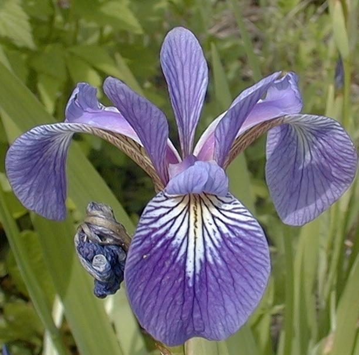
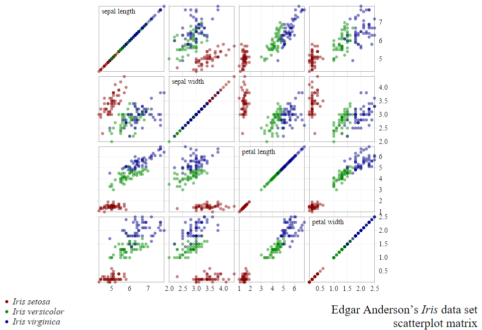

Weka
- pierwsze kroki
Zadania
Zadanie #1
Przypisz nazwy do kwiatów
Co je od siebie odróżnia?
iris-versicolor, iris-setosa, iris-virginica
| iris- | iris- | iris- |
 |
 |  |
Zbiór iris Fishera
petals / sepals


Zbiór iris Fishera
http://mbostock.github.io/d3/talk/20111116/iris-splom.html
Zadanie #2
Odpowiedz na pytania:
- iris-setosa ma:
- niskie wartości
- wysokie wartości
- iris-virginica ma:
- low wartości
- high wartości
- trzy kategorie są najlepiej odróżnialne przez atrybut:
- sepallength
- sepalwidth
- petalwidth
Zadanie #3A
Wykorzystaj klasyfikator rules.PART na zbiorze iris i odpowiedz na pytania:
- który klasyfikator lepiej sprawdza się na tym zbiorze: J48 czy PART?
- jak wiele przypadków iris-versicolor zostało zaklasyfikowanych jako iris-setosa?
- jak wiele przypadków iris-virginica zostało zaklasyfikowanych jako iris-versicolor?
Zadanie #3B
W jakiej relacji pozostają do siebie:
- dokładność klasyfikatora na zbiorze uczącym?
- dokładność klasyfikatora na podzbiozre 20% danych?
- dokładność klasyfikatora liczona przy walidacji krzyżowej?
Zadanie #4
Wykorzystaj klasyfikator J48 na zbiorze iris i odpowiedz na pytania:
- na podstawie wizualizacji drzewa dokonaj ręcznie klasyfikacji następującej obserwacji:
- sepallength=6.7, sepalwidth=3.0
- petallength=5.0, petalwidth=1.7
- czy wszystkie atrybuty są wykorzystywane przez klasyfikator?
- które instancje iris-versicolor zostały błędnie sklasyfikowane jako iris-virginica?
(wykorzystaj panel Visualize classifier errors).
Zadanie #5A
Wykorzystaj filtr do usunięcia atrybutów najmniej skorelowanych z atrybutem klasy w zbiorze glass.
- w jaki sposób wpłynęło to na dokładność klasyfikacji?
- jak wpływa usuwanie innych atrybutów na dokładność klasyfikacji?
- dla jakiego zestawu atrybutów dokładność jest najwyższa?
Zadanie #5B
Wykorzystaj klasyfikator J48 na zbiorze ionosphere. Kiedy dokładność klasyfikacji jest najwyższa?
- przy dyskretyzacji atrybutów przez algorytm J48
- przy dyskretyzacji atrybutów za pomocą algorytmu nienadzorowanego
- równa szerokość
- równa liczność
- przy dyskretyzacji atrybutów za pomocą algorytmu nadzorowanego
- przy dyskretyzacji atrybutów do postaci binarnej za pomocą algorytmu nadzorowanego
Zadanie #6
Wykorzystaj tryb Experimenter do porównania dokładności poznanych algorytmów na zbiorze segment-challenge
- który algorytm jest najlepszy na tym zbiorze?
- czy różnice są istotne statystycznie?
Wykorzystaj tryb KnowledgeFlow do iteracyjnego uczenia klasyfikatora NaiveBayes
- jak zmenia się dokładność i błąd w stosunku do liczby przykładów uczących?